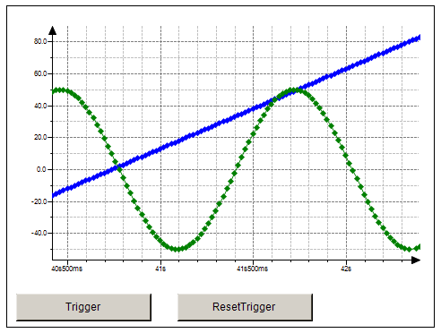

1.3.17. Trace Manager (CmpTraceMgr)¶
The trace functionality is provided with the ‘TraceEditor’ in CODESYS. It allows to capture the progression of the values of variables on the PLC over a certain time, similar to a digital sampling oscilloscope. Additionally a trigger can be set to control the data capturing with input (trigger) signals. The values of trace variables are steadily written to a CODESYS buffer of a specified size and then can be observed in form of a two-dimensional graph plotted as a function of time.
The configuration of a trace can be found in the CODESYS Online Help.
The Trace Manager ‘CmpTraceMgr’ is a component of the runtime system CODESYS Control V3. This component handles all kind of traces respectively trace configurations.
The Trace Manager has enhanced functionality. It is possible:
- to configure and trace parameters of the control system (like the
- temperature curve of the CPU or the battery)
- to read out device traces (like the trace of the electric current of
- a drive)
- to trace system variables of other runtime system components.
A trace configuration is called a “Trace Packet”. And a single variable inside a Trace Packet is called a “Trace Record” (which is stored in data set that consists of a value and the corresponding timestamp of the shot).
As a Trace Record you can select an IEC variable, a system variable or I/O config variable. For example, the dynamical values like current values of a drive can be stored in a record.
Every component (Runtime or IEC) can define a Trace Packet resp. a Trace Configuration. The in CODESYS integrated Trace Editor uses the same component to store an manage the User Traces.
The trace editor in the CODESYS programming system can display all registered Trace Packets.
The trace configuration and the values can be stored in a file. This feature is called persistent trace. So after a reboot of the controller, the persistent trace configuration will automatically be loaded and restarted.
Further information on the Trace Manager can be found in the Tutorial “CODESYSControlV3_TraceManager_Manual.pdf”.